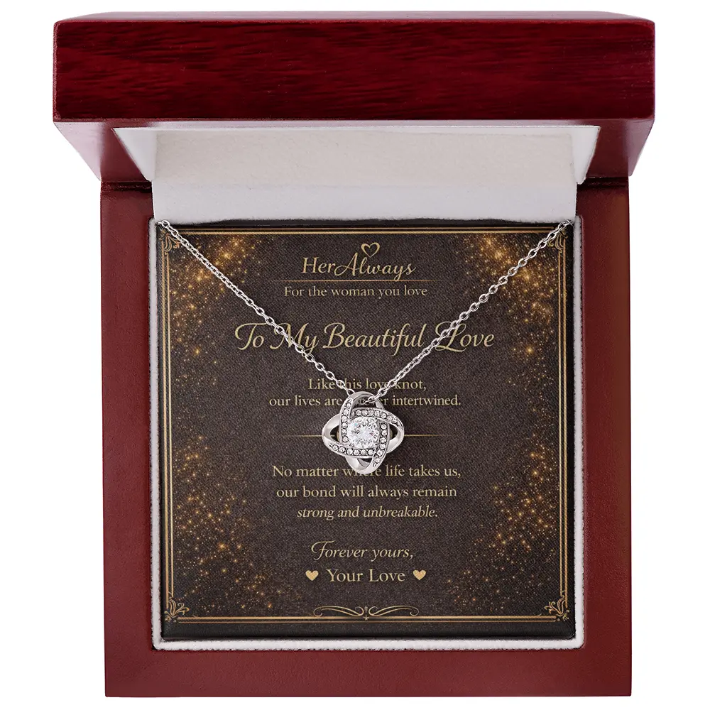

The love knot necklace meaning is centered around eternal love, unbreakable bonds, and deep emotional connection. This timeless symbol represents two lives intertwined together, creating a relationship that cannot be undone.
Because of its powerful symbolism, the love knot is often considered one of the most meaningful necklace designs for romantic relationships.
If you want to explore all symbols, you can also read our complete guide on necklace symbols and their meanings in love.
What Does the Love Knot Symbolize?

The love knot symbol represents an unbreakable bond between two people. Unlike other symbols, the knot has no beginning or end, making it a powerful representation of eternal love.
- Two lives connected forever
- Endless love and commitment
- Strength through challenges
- A bond that cannot be broken
This is why the love knot necklace meaning in love is often associated with serious relationships and long-term commitment.
Love Knot Necklace Meaning in Relationships
In relationships, the love knot symbolizes a deep emotional connection that goes beyond surface-level attraction. It represents a relationship built on trust, loyalty, and lasting commitment.
Many people choose a love knot necklace for girlfriend when their relationship reaches a more serious stage.
- Represents long-term commitment
- Symbolizes emotional closeness
- Shows a serious intention for the future
When to Gift a Love Knot Necklace
Because of its deep meaning, a love knot necklace is best given during meaningful relationship milestones.
- Anniversaries
- Serious relationships
- Romantic milestones
- Special emotional moments
If you're unsure what to choose, you can also explore our guide on the best necklace gifts for your girlfriend.
Love Knot vs Infinity vs Heart
While many symbols represent love, each one has a slightly different meaning.
- Love Knot → Deep, unbreakable bond
- Infinity → Endless love (see our infinity necklace meaning guide)
- Heart → Romantic affection
To compare all symbols in detail, visit our full guide on necklace meanings in love.
Is the Love Knot the Strongest Symbol of Love?
Many consider the love knot to be the strongest symbol of love because it represents a bond that cannot be broken. Unlike simple symbols, it reflects both emotional depth and long-term commitment.
For this reason, it is often chosen as a meaningful gift when someone wants to express serious love.
Where the Love Knot Comes From
Knots have been used as symbols of love and promise in many cultures, so there is no single origin for the love knot. In Celtic-style knotwork, lines weave over and under each other with no visible start or end, which is why knot designs came to stand for love that continues without a break. In English-speaking folk tradition, the “true lover’s knot” was a motif exchanged between people in love. In Chinese tradition, decorative knots are linked with good fortune and are often used at weddings. Different stories, but the same idea: two strands, tied together on purpose.
Why a Knot? What the Shape Says
A heart tells her you love her, and an infinity sign tells her it will last. A knot says something a little different: that two separate lives have chosen to be tied together. Two strands that were once apart now hold each other in place, and a knot tends to pull tighter under strain rather than slip loose. That is why people often read the love knot as strength through hard times, not only romance in easy ones.
How to Choose: Love Knot, Heart or Infinity
- Love knot: two lives joined, commitment and loyalty. Best for a serious, long-term relationship or a milestone anniversary.
- Heart: romantic affection, understood by everyone. A safe pick at any stage. See the heart necklace meaning.
- Infinity: love with no end. A good fit for anniversaries and long-distance relationships. See the infinity necklace meaning.
If you have been together a short time, a love knot can feel like a big statement, and a heart or infinity necklace may be the lighter choice. If you want something that speaks to a lasting commitment, the knot is the one that says it.
The HerAlways Love Knot Necklace
Our Love Knot Necklace is $109.95 with free shipping. It is made of stainless steel with a 14k white gold finish (silver-tone), set with a 6 mm lab-created cubic zirconia, on an 18–22 inch adjustable chain. It is a finish over steel, not solid gold, and the stone is not a diamond. It arrives on a message card in a gift box, ready to give.
What to Write on the Love Knot Message Card
You can type your own message after clicking “Create Your Gift.” If you leave it blank, the sample card reads “To My Beautiful Love.” If you want to write something yourself, here are a few lines to borrow:
- “Two lives, tied together. I would choose it again every day.”
- “Whatever comes, we hold each other. I’m yours.”
- “You are the knot that keeps my life together.”
For more ideas, see our necklace gift messages for a girlfriend and our explainer on what a message card necklace means.
A Romantic Gift She’ll Never Forget
If you're looking for a meaningful necklace that represents a deep and lasting bond, the love knot necklace is one of the best choices.
FAQ – Love Knot Necklace Meaning
What does a love knot necklace mean?
A love knot necklace represents an unbreakable bond, eternal love, and deep emotional connection between two people.
Is a love knot necklace romantic?
Yes. It is one of the most romantic necklace designs because it symbolizes lasting commitment and emotional closeness.
When should you give a love knot necklace?
It is best given during anniversaries, serious relationships, or meaningful milestones.
Is love knot better than infinity?
The love knot represents deeper commitment, while infinity represents endless love. Both are meaningful, but the love knot is often seen as stronger emotionally.
Final Thoughts
The love knot necklace meaning goes beyond simple jewelry. It represents a powerful emotional bond, making it one of the most meaningful gifts you can give in a relationship.
If you want to explore more symbolic necklace ideas, you can visit our complete guide on necklace symbols and meanings in love.